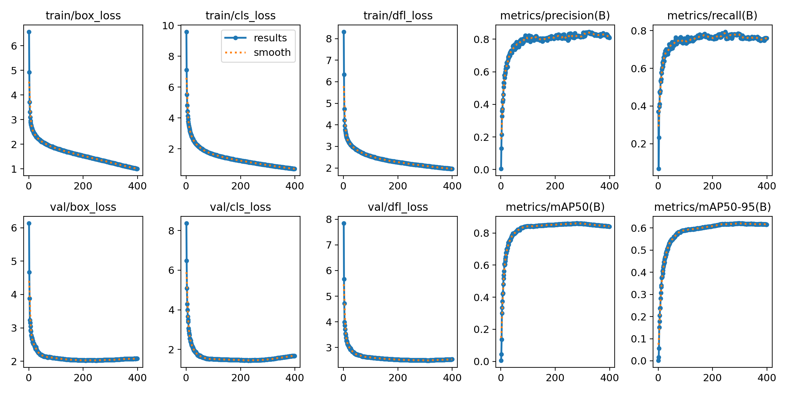

What it does
At the open day, visiting students stood in front of a webcam and watched the model find each person and label them male or female in real time. The goal was to show what computer vision can do, not to build a product. The final model was also exported to ONNX, TensorRT and TorchScript for faster inference.
The clip is seconds of an event video from the project, run through the final model at confidence . Heads are pixelated for privacy: every person found by the model or by two COCO person detectors, and every face OpenCV finds.
At the open day
A recording from the demo's webcam on the day, with the boxes and labels the live demo drew on screen.
The person left in view is the author of this project. Everything else, including another person and the banners that name the venue, is pixelated.
Final model on the test set
YOLOv10s trained from scratch. Scored on test photos with women and men labelled. of the test photos are left out because, after the datasets were merged, the same photos also appear in the training or validation split.
Of the labelled people, the model found , and gave of those the right label. It labelled women as male and men as female.
The dataset
Four sets of photos were labelled with two classes, female and male, in Roboflow during September and October 2024, then merged into one dataset: training photos, expanded to images with augmented copies, plus validation and test photos. The project also includes a small OpenCV notebook that cuts frames out of recorded video, to collect more photos.
What the training logs show
training runs between and , each scored on its own dataset's validation photos. Scores from different datasets cannot be compared with each other, so the points below compare runs on the same data.
On the merged data, starting over beat continuing
After the four sets were merged (), the runs that continued from the earlier model peaked at validation mAP50. A fresh run from scratch on the same data reached , so it became the final model. Two later runs that continued from it scored , no better.
Training on from a finished model added nothing
Merging datasets leaked test photos
The four sets were split into training, validation and test photos on their own, then merged. of the merged test photos also sit in the training or validation split, so a test score on all of them would be too high. The scores above leave them out. Splitting by source photo after merging would avoid this.
All training runs
| Run | Date | Dataset | Starting weights | Best epoch | Validation mAP50 | Validation mAP50-95 |
|---|
Training curves of the final model

Limitations and next steps
The model guesses gender from appearance and knows only two labels, so it will mislabel people whose appearance does not match how they identify. It was built to demonstrate object detection, not to decide anyone's gender. The test photos come from the same sources as the training photos, so accuracy on a new camera is likely lower. Each frame is labelled on its own, so a person's label can flicker from frame to frame.
- Split training, validation and test photos by source photo after merging datasets.
- Track each person across frames and keep one label per person, so labels stop flickering.
- Label footage from the demo camera itself and measure accuracy there, for women and men separately.
Who built what
- Labelling the datasets and training every model: weikang14, as a project at work
- This page, scoring the final model on the clean test photos and the privacy-safe demo clip: built with Claude Code, an AI coding assistant